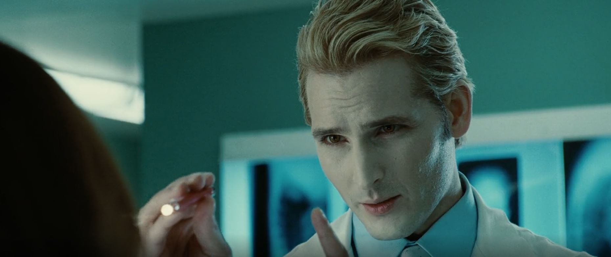

It gives us an excuse to use the kitchen for the first time.

Edward's foster father, Carlisle is very protective of his family and welcomes Bella into it with open arms.
Though eons old, his appearance does not reveal his advanced age, only advanced charm.